S04 — How Do Rockets Escape Earth?
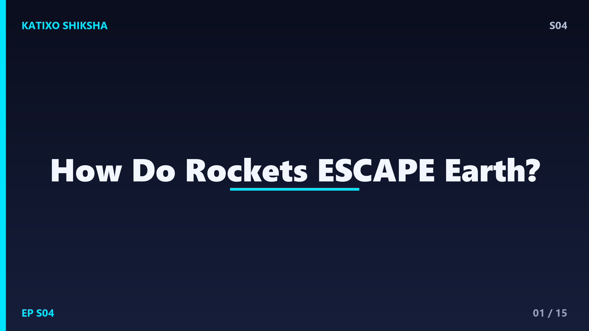
Slide 1Every second, Earth's gravity is pulling you down with a force of about 9.8 newtons per kilogram. Jump up — gravity pulls you right back. Throw a ball — gravity curves it back to the ground. Nothing escapes. Or does it? In 2023, ISRO's Chandrayaan-3 blasted off from Sriharikota, broke free of Earth's gravity, travelled 3.84 lakh kilometres, and soft-landed on the Moon. How? How do you beat a force that never, ever stops pulling? Today on Katixo Shiksha, we're cracking the physics of rockets. Let's go!
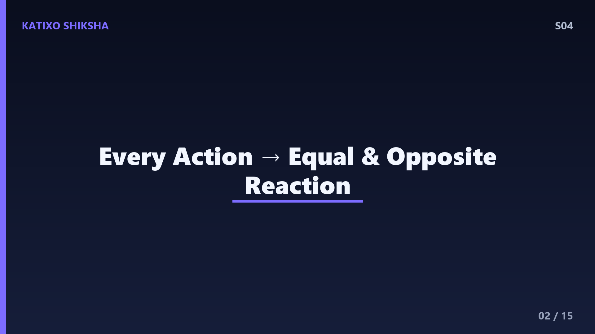
Slide 2Let's start with the basics — Newton's Third Law. For every action, there is an equal and opposite reaction. This is the fundamental principle behind every rocket ever launched. A rocket doesn't push against the ground. It doesn't push against air. In fact, rockets work even better in the vacuum of space where there's nothing to push against. What happens is — the rocket burns fuel, which creates hot gas expanding at extreme speed. That gas shoots downward out of the nozzle. And by Newton's Third Law, the rocket gets pushed upward with equal force. Action: gas goes down. Reaction: rocket goes up. That's it. That's the core idea.
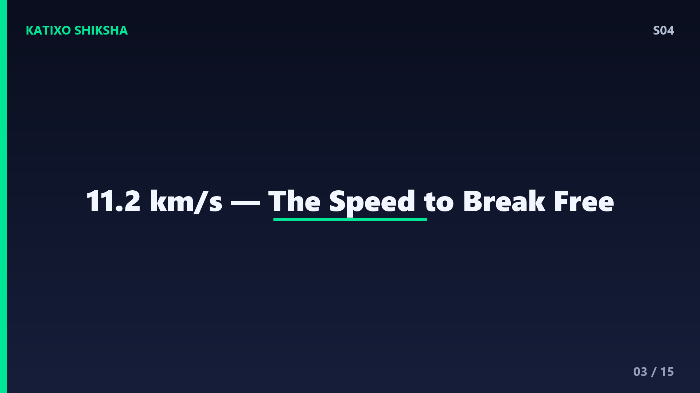
Slide 3But here's the problem — gravity doesn't give up. To escape Earth permanently, you need to reach a specific speed called escape velocity. For Earth, that's 11.2 kilometres per SECOND. Let me put that in perspective — a bullet from an AK-47 travels at about 0.7 km per second. Escape velocity is sixteen times faster than a bullet. The fastest car in the world does about 0.13 km/s. Escape velocity is roughly 86 times faster. You need absurd speed to break free from Earth's gravitational pull. And this speed depends on two things — the mass of the planet and your distance from its centre.
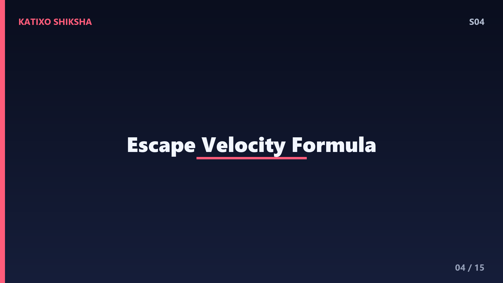
Slide 4The formula for escape velocity is beautiful in its simplicity. V-escape equals the square root of 2GM divided by R. G is the gravitational constant — a universal number. M is the mass of the planet. R is the distance from the planet's centre. Notice what's NOT in this formula — the mass of the rocket. It doesn't matter if you're launching a 1 kg ball or a 500-tonne rocket. The escape velocity is the same. But — and here's the catch — the heavier your rocket, the more energy you need to accelerate it to that speed. And energy comes from fuel. And fuel has mass. This creates a brutal problem.
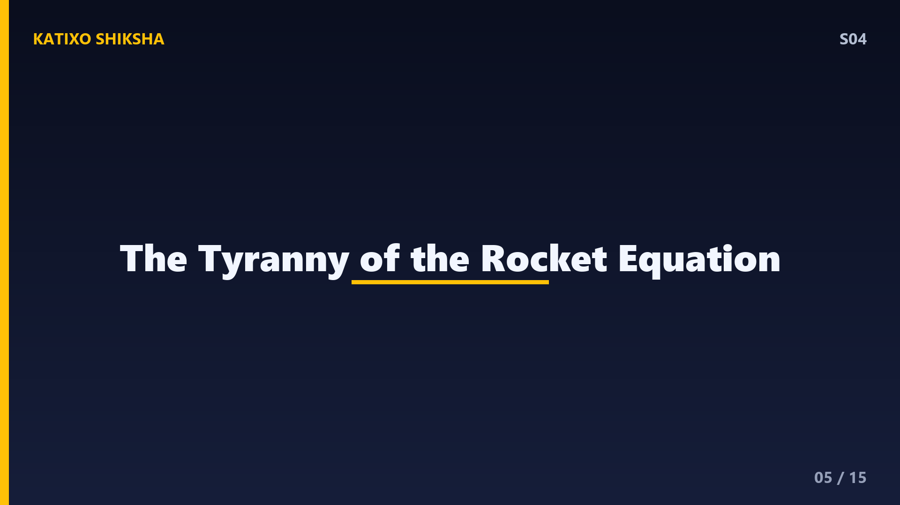
Slide 5This brutal problem is called the Tyranny of the Rocket Equation, derived by Konstantin Tsiolkovsky in 1903. Here's the dilemma — to carry more payload, you need more fuel. But more fuel means more mass. More mass means you need even MORE fuel to accelerate that extra fuel. It's a vicious cycle. For a typical rocket going to low Earth orbit, about 85 to 90 percent of the total launch mass is just fuel. The actual satellite or spacecraft that reaches orbit? It's often less than 5 percent of the total mass on the launchpad. ISRO's GSLV Mark III weighs 640 tonnes at launch. The payload to orbit? About 10 tonnes. That's 1.5 percent.
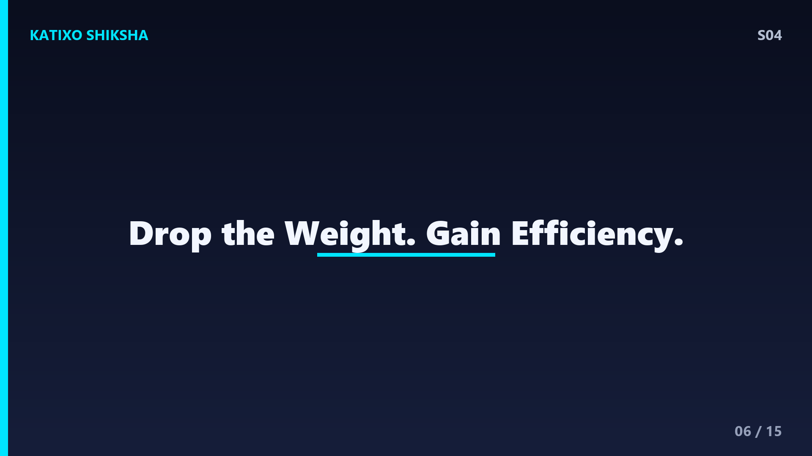
Slide 6This is exactly why rockets have stages. Instead of carrying empty fuel tanks all the way to space, rockets drop them once they're empty. The first stage burns the most fuel to fight through the thickest part of the atmosphere and overcome maximum gravity. Once its fuel is gone, explosive bolts detach it, and it falls away. Now the second stage ignites — it's pushing a much lighter vehicle, so it's more efficient. Some rockets have three stages. It's like climbing a mountain and dropping your heaviest bag at each camp. ISRO's PSLV has four stages, alternating between solid and liquid fuel — a clever engineering choice.
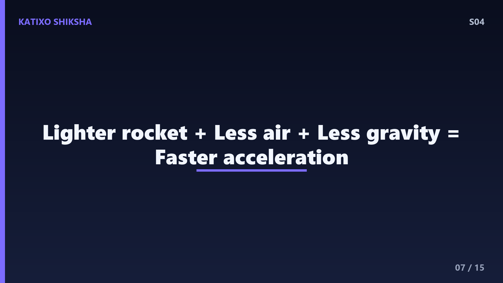
Slide 7Let's talk about what happens during launch. In the first few seconds, the rocket is barely moving — most of the thrust is just fighting gravity. As it accelerates and gains altitude, two things happen. First, gravity weakens slightly because you're moving away from Earth's centre. Second, the atmosphere thins out, so air resistance drops dramatically. And third, the rocket is getting lighter as it burns fuel. So the same thrust pushes a lighter vehicle with less resistance. The acceleration increases — astronauts feel this as increasing G-forces pressing them into their seats. During a typical launch, astronauts experience about 3G — three times their body weight.
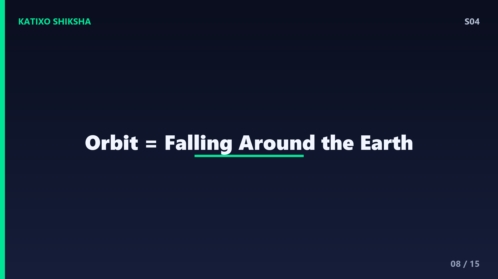
Slide 8Here's something most people don't realise — reaching space isn't the hard part. Space officially begins at 100 kilometres altitude, the Kármán line. You can reach that altitude with relatively little speed. The hard part is staying there. If you just go straight up and stop, you'll fall right back down. To stay in orbit, you need to move sideways so fast that as you fall toward Earth, the Earth's surface curves away beneath you at the same rate. You're literally falling around the Earth. Orbital velocity for low Earth orbit is about 7.8 km/s. The International Space Station is falling toward Earth right now — it just keeps missing.
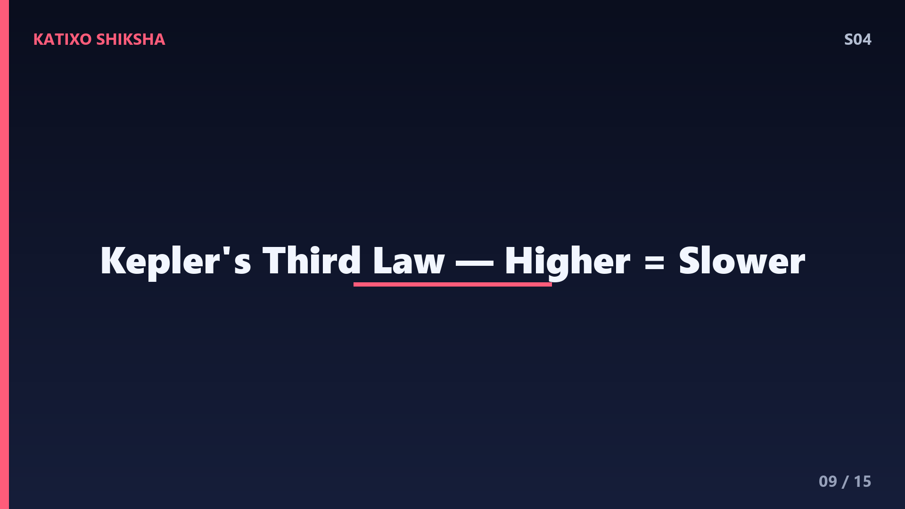
Slide 9This brings us to one of the most unintuitive ideas in orbital mechanics — to go to a higher orbit, you actually slow down. Wait, what? Here's why. When you fire your engines forward in orbit, you speed up. This pushes you into an elliptical orbit — you swing out to a higher point. At that higher point, you fire engines again to circularise the orbit. But the orbital speed at a higher altitude is SLOWER than at a lower altitude. The Moon orbits at just 1 km/s. The ISS at 7.8 km/s. This is Kepler's Third Law in action — higher orbits have longer periods and lower speeds.
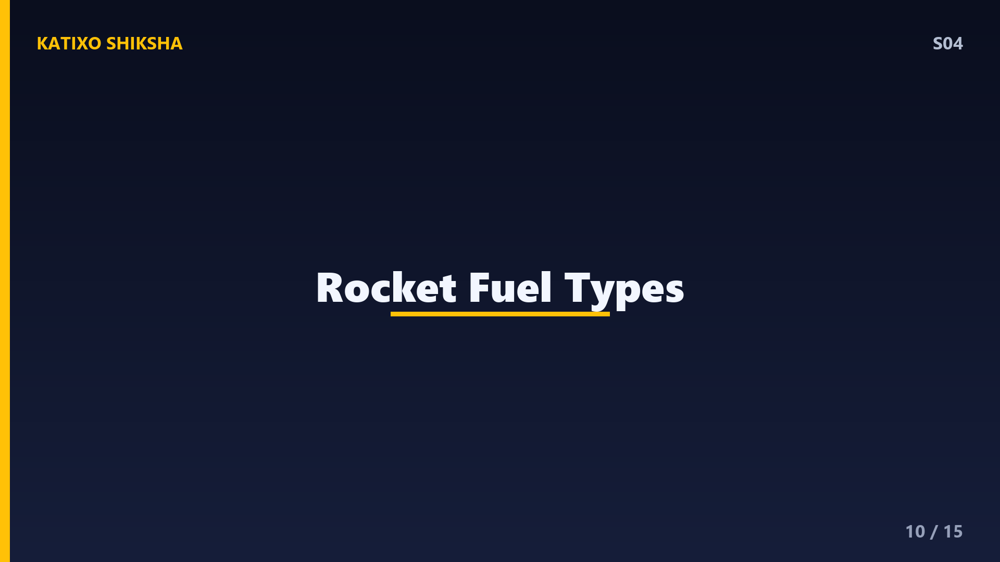
Slide 10Let's talk fuel. Rockets use two types — solid and liquid. Solid fuel is like a giant firework — fuel and oxidiser are pre-mixed into a solid block. Once you light it, you can't stop it. It's simpler, cheaper, and provides massive thrust, which is why it's often used in first-stage boosters. Liquid fuel uses separate tanks of fuel and oxidiser that are pumped into a combustion chamber. Liquid hydrogen and liquid oxygen is the classic combo — when they react, they produce water vapour at incredibly high temperatures. Liquid engines can be throttled up and down, even shut off and restarted. ISRO's Vikas engine uses a liquid fuel called UDMH with nitrogen tetroxide as oxidiser.
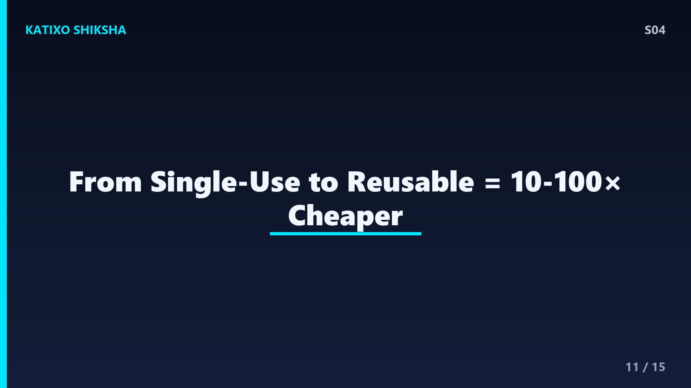
Slide 11One of the biggest recent revolutions in rocketry is reusability. Traditionally, rockets were single-use — you build a 500-crore-rupee rocket, use it once, and it crashes into the ocean. SpaceX changed this by landing the Falcon 9 first stage back on a landing pad, refurbishing it, and flying it again. One Falcon 9 booster has flown over 20 times. ISRO is also developing the Reusable Launch Vehicle — the RLV-TD. In 2023, they successfully demonstrated its landing capability. Reusability could reduce launch costs by 10 to 100 times, which could make space access dramatically cheaper.
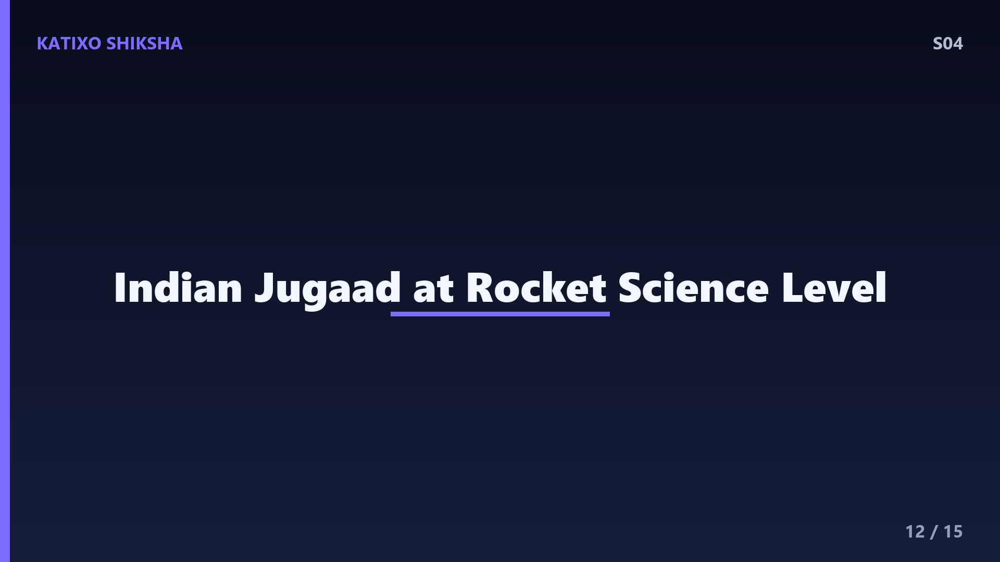
Slide 12India's space programme deserves special mention. ISRO is known for doing incredible things on tight budgets. The Mars Orbiter Mission — Mangalyaan — cost just 450 crore rupees. That's less than the budget of the Hollywood movie Gravity, which was ABOUT space. The Chandrayaan-3 moon landing cost about 615 crore rupees — roughly 75 million dollars. For comparison, NASA's equivalent Artemis programme costs billions. ISRO achieves this through clever engineering — using gravity assists, lighter materials, and multi-stage designs optimised for cost efficiency. Indian jugaad, but at a rocket science level.
Slide 13Time to test yourself! Question one — what is Earth's escape velocity, and what two factors does escape velocity depend on? Question two — why do rockets have multiple stages instead of one big stage? Question three — what's the key difference between reaching space and staying in orbit? Pause. Think. Write. This is your brain building actual neural connections right now. Don't shortchange it.
Slide 14Answers! Question one — Earth's escape velocity is 11.2 km/s. It depends on the planet's mass and the distance from its centre. Question two — dropping empty fuel tanks reduces mass, making the remaining stages more fuel-efficient. Carrying dead weight to space wastes enormous amounts of fuel because of the rocket equation. Question three — reaching space just means going 100 km up. Staying in orbit requires moving sideways at about 7.8 km/s so you keep falling around Earth without hitting it. If you got all three — you've genuinely understood orbital mechanics. That's Class 11 physics you just learned.
Slide 15Recap — rockets work by Newton's Third Law, expelling gas downward to push themselves up. Escape velocity is 11.2 km/s, determined by planetary mass and radius. The rocket equation creates a tyranny where most launch mass must be fuel. Staging solves this by discarding empty tanks. Orbit isn't about height — it's about sideways speed. And India's ISRO is proving you don't need a huge budget to reach the stars. Next episode — the simplest question with the deepest answer. Why is the sky blue? It involves physics that earned a Nobel Prize. Subscribe and find out. Bye!